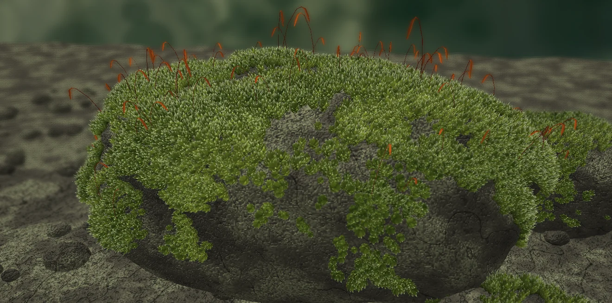

LabAll experiments
LabAll experiments 
Tap the moss to wet a patch. Drag sideways to look around.
Tāmaki Makaurau / Bryum argenteum
Why does moss turn green in the rain?
Look closely at the silver tips. Predict what a drop of water will change, then wet just one patch and compare it with its neighbour.
Why does the colour change?
Silvery bryum grows in the cracks of New Zealand footpaths. The pale tips of its leaves turn transparent when wet, letting the green underneath show through.
A procedural study on Auckland volcanic stone. The wetting response is sped up so you can see it. Read about the moss at Te Ara ↗